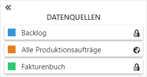

Durch Anwahl des Eintrags "Datenquellen verwalten" wird der Bereich zur Verwaltung von Datenquellen geöffnet.

In der Auflistung werden alle aktiven Datenquellen (d.h. Ausgangsdatenquelle und importierte Datenquellen) angezeigt. Durch Anwahl der Farbauswahl kann jeder Datenquelle eine individuelle Farbe zugewiesen werden, wodurch die Widgets entsprechend optisch gekennzeichnet werden.
Hinweis
Neben dem Namen der Datenquelle wird dargestellt, um was für eine Art von Datenquelle es sich handelt:
ü - private Datenquelle
ü - öffentliche Datenquelle